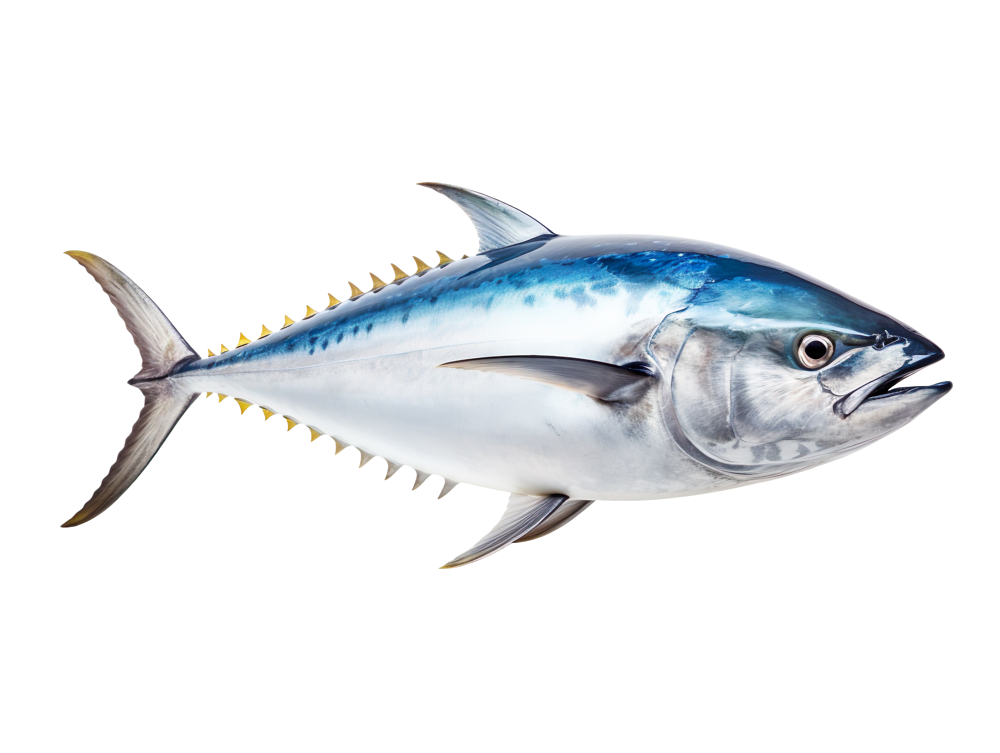
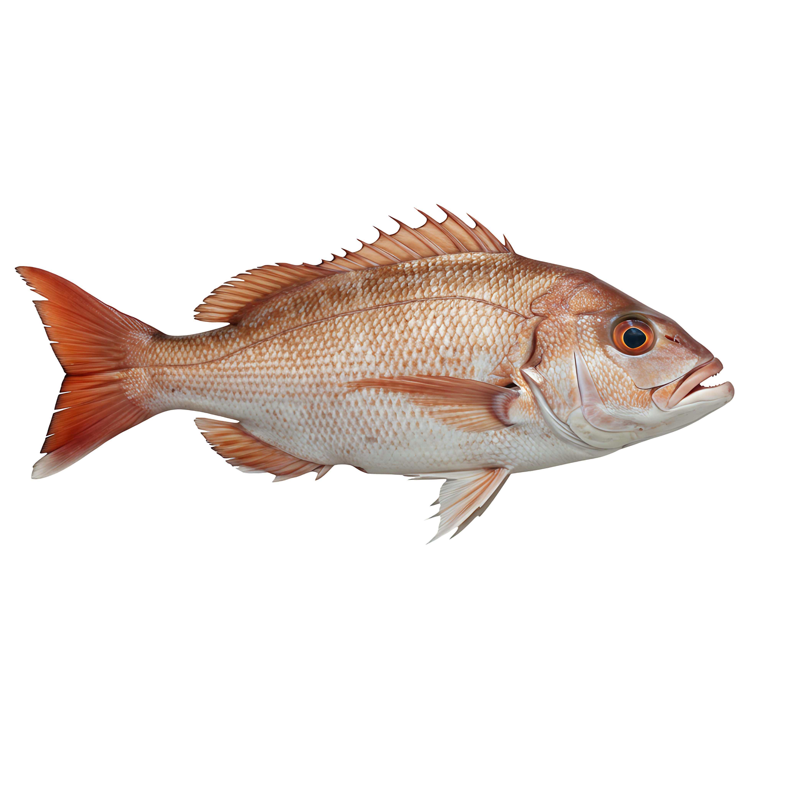
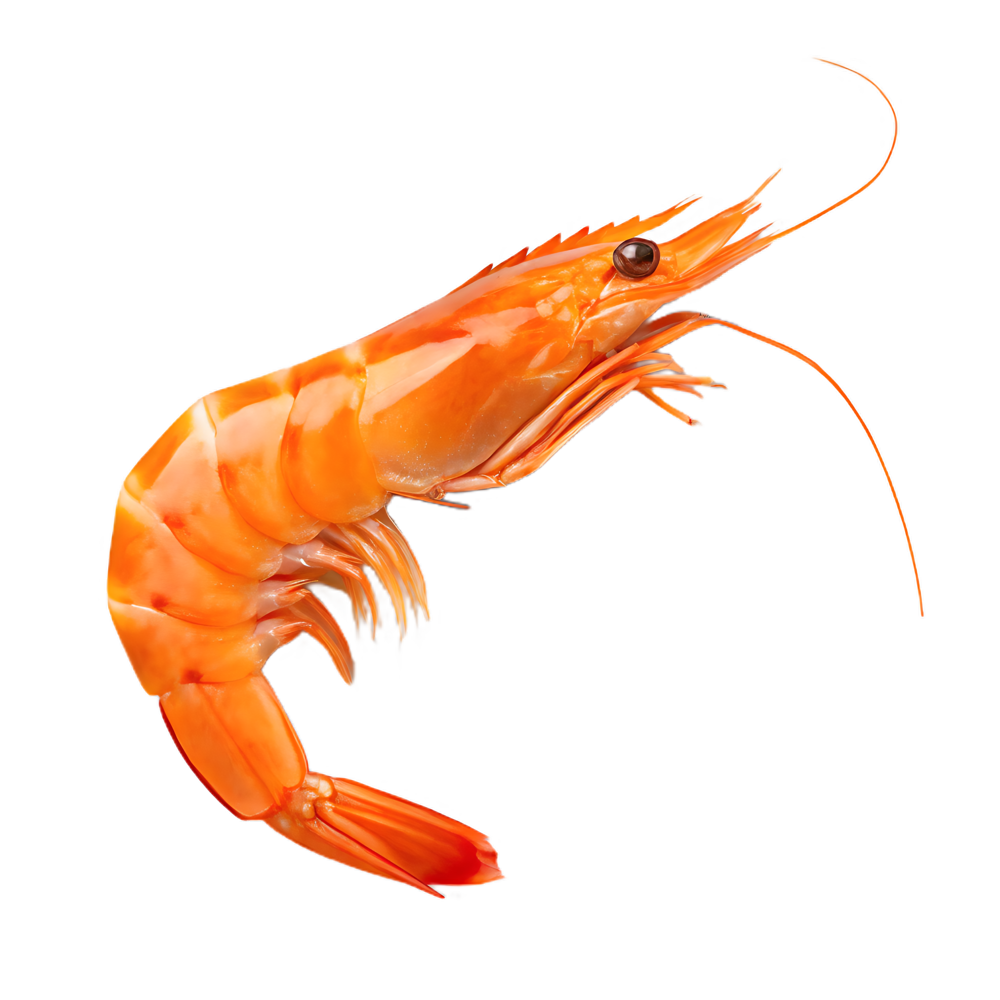

🎣 Perairan Terbuka — Kapal Aktif
Tangkap ikan (keberuntungan & level peralatan), atau bajak & tukar kapal canggih milik lawan!
Pancing
Lv.1
Kapalmu
Lv.1
⛵
Siap melempar kail (-15 Energi) atau membajak kapal lawan...
Ship healthy • Bait casts: 0



🧺 Palka Kapalmu (0/15 Slot)
Olah ikan menjadi Fillet agar harganya naik 2x lipat sebelum dijual!
🏖️ Tropical Supply Shop
Beli perlengkapan kapal dan energi. Equipment permanen, bait berlaku 3 lemparan.
Galangan Kapal & Toko
⛵
🔱
🛠️ Upgrade Perlengkapan
Kapal dengan palka besar dan energi tinggi sangat diincar untuk dibajak lawan—waspada di laut!
🚢 Upgrade Kapal & Palka
Saat ini: Lv.1 (Maks 15 Slot / 100 Energi)
🎣 Upgrade Alat Pancing
Saat ini: Lv.1 (Bonus Harga Ikan +0%)
⚔️ Tips Strategi: Malas menabung untuk upgrade kapal? Gunakan aksi Hijack Ship di laut untuk mengambil alih kapal Lv.2+ milik lawan!